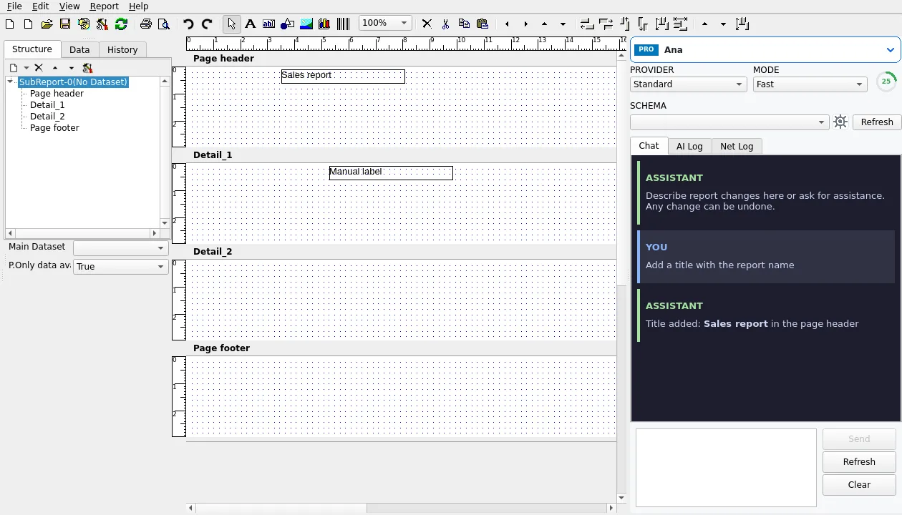
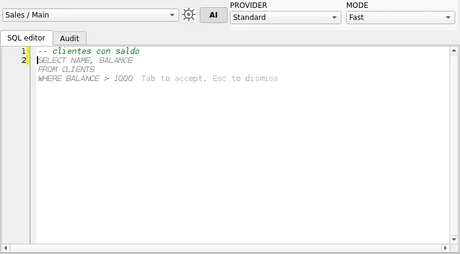

Install Report Manager Designer on Linux
Report Manager Designer runs natively on the Linux desktop. It is the same designer as on
Windows, built with Lazarus and the Qt 6 toolkit: band-based
report design, data configuration, preview, PDF export, printing and the
AI assistants (report design,
SQL and expressions). It opens and saves the same .rep files as the Windows designer.

Downloads
Download the packages of the latest release from the
SourceForge files page
(Linux folder of the release). There are three files; the version (for example
4.0.16) is the same as the Windows designer:
| File | What it is | For |
|---|---|---|
reportman-designer_<version>_amd64.deb |
Qt 6 .deb package (recommended) | Ubuntu 22.04 or later, Debian 12 or later and derivatives (Linux Mint 21+, Pop!_OS, Zorin OS…).
apt installs the dependencies. |
reportman-designer-gtk2_<version>_amd64.deb |
GTK2 .deb package (transitional) | The same distributions, only if the Qt 6 version does not suit you (see below). |
ReportManDesigner-<version>-x86_64.AppImage |
AppImage, Qt 6 | Any x86_64 distribution with glibc 2.35 or later. Download and run, nothing to install. |
Only 64-bit PCs (x86_64) are supported for now. The SHA256SUMS file next to the
packages verifies the download: sha256sum -c SHA256SUMS --ignore-missing.
Every package is tested before release on clean Ubuntu 22.04, 24.04 and 26.04 and Debian 12 and 13 systems.
Qt 6 or GTK2?
- Qt 6 (
reportman-designer) is the recommended package: current look and automatic HiDPI scaling, also with fractional factors (it follows the desktop scale; it can be forced withQT_SCALE_FACTOR=1.5 reportman-designer). - GTK2 (
reportman-designer-gtk2) is the same designer built with GTK2, published for one or two releases as an alternative. GTK2 is no longer maintained and Debian plans to remove it, so this package will be discontinued. Use it only if your system has no Qt 6 packages or something fails with the Qt 6 version (and please report it).
Both packages install the same files and cannot be installed at the same time: installing one
replaces the other. Your preferences, connections and reports are shared by both.
reportman-designer --version shows which one you have: (LCL qt6) or
(LCL gtk2).
sudo apt install ./reportman-designer-gtk2_4.0.16_amd64.deb # switch to GTK2
sudo apt install ./reportman-designer_4.0.16_amd64.deb # back to Qt 6Install the .deb package (recommended)
- Download
reportman-designer_<version>_amd64.deb(Qt 6). - Install it with a double click (the desktop software installer opens it) or from a terminal,
in the download folder:
Thesudo apt install ./reportman-designer_4.0.16_amd64.deb./tellsaptthat it is a local file and not a repository package;aptdownloads and installs all the dependencies.
After the installation:
- Report Manager Designer is in the applications menu (Office).
.repfiles open in the designer with a double click (MIME typeapplication/x-reportman-report).- It can be started from a terminal:
reportman-designer [report.rep].reportman-designer --versionshows the version and the folders it uses, andman reportman-designerhas the help.
| Path | Contents |
|---|---|
/opt/reportman-designer/ | The program, its translations and the sample reports (samples/) |
/opt/reportman-designer/lib/ | Qt 6 only: libQt6Pas, the Lazarus binding to Qt 6 (not packaged by Ubuntu 22.04/24.04 or Debian 12); the rest of Qt 6 comes from the distribution |
/usr/bin/reportman-designer | Link to the program |
/usr/share/applications/reportman-designer.desktop | Menu entry |
/usr/share/mime/packages/reportman-designer.xml | MIME type of *.rep |
/usr/share/icons/hicolor/*/apps/reportman-designer.* | Icons (16 to 512 px and SVG) |
Update and uninstall
To update, install the .deb of the new version the same way; apt replaces
the previous one (there is no apt repository with automatic updates yet). To uninstall:
sudo apt remove reportman-designer # Qt 6 version
sudo apt remove reportman-designer-gtk2 # GTK2 versionThis removes the program, the menu entry, the icons and the *.rep association. Your
files are not touched: preferences (~/.config/reportman/), connections
(~/.borland/) and reports.
Use the AppImage
chmod +x ReportManDesigner-4.0.16-x86_64.AppImage
./ReportManDesigner-4.0.16-x86_64.AppImage [report.rep](or, in the file manager: Properties → Allow executing as program, then double click).
The AppImage is the Qt 6 version and carries Qt 6.2, libQt6Pas, GLib, ICU and
SQLite. From the system it uses what any desktop has: X11 or XWayland, fontconfig, FreeType,
HarfBuzz, fonts, libEGL.so.1 and libOpenGL.so.0 (packages
libegl1 and libopengl0), CUPS to print and OpenSSL with the CA certificates
for the HTTPS connections to the Hub.
- If it fails with a FUSE error, run it without mounting:
./ReportManDesigner-4.0.16-x86_64.AppImage --appimage-extract-and-run(or install thefuse3/fusepackage of your distribution). - The AppImage does not add itself to the menu nor associate
*.repfiles; use the.debor a tool such as AppImageLauncher or Gear Lever for that. To remove it, delete the file.
Dependencies
apt installs them automatically; they are listed in case you install on an
unsupported distribution or something fails.
- Qt 6 package: Qt 6.2 or later (
libqt6core6,libqt6gui6,libqt6widgets6,libqt6printsupport6, or their…t64names on Ubuntu 24.04),qt6-qpa-plugins,libstdc++6, X11 and glibc 2.35 or later.libQt6Pasis included in the package. - GTK2 package: GTK2 (
libgtk2.0-0orlibgtk2.0-0t64), GLib, ATK, Pango, Cairo, GDK-Pixbuf, X11 and glibc 2.34 or later. - Both, loaded by the engine at run time:
libfreetype6,libfontconfig1,libharfbuzz0b,libsqlite3-0, an ICU library between versions 70 and 78 (libicu70on Ubuntu 22.04,libicu72on Debian 12,libicu74on Ubuntu 24.04…) and thefonts-dejavu-corefonts; for HTTPS (the AI assistants and therpdbHttpReportman Agent driver), OpenSSL 3 (libssl3, 1.1 is also accepted) andca-certificates. - Recommended:
fonts-liberation(metrics compatible with Arial, Times and Courier),libharfbuzz-subset0(the PDF embeds only the characters used from each font) andlibcups2to print.
Font selection and complex text shaping (Arabic, Hebrew, Devanagari…) use fontconfig, HarfBuzz and ICU, see bidirectional text and complex scripts.
First steps
- The sample reports are in
/opt/reportman-designer/samples/. That folder is read-only; copy it to modify the samples:cp -r /opt/reportman-designer/samples ~/reportman-samples. The samples with data need their connection: the test connections (for exampleSQLITETEST, SQLite overclientes.db) are insamples/dbxconnections.ini. Add them with the same parameters in Report > Data access configuration > Configure (the editor of~/.borland/dbxconnections), or copy their sections to that file. - The designer language (menus, toolbars, dialogs and messages) follows
LC_ALL,LC_MESSAGESorLANG, in that order: English, Spanish, Catalan, French, German, Italian, Portuguese, Czech and Lithuanian. For exampleLANG=fr_FR.UTF-8 reportman-designer. - The AI assistants need a Reportman account: sign in from the AI panel of the designer (with an e-mail code or through your web browser).
Wayland
In a Wayland session (GNOME, KDE Plasma…) the designer runs through XWayland, as an X11
application. The Qt 6 version chooses X11 (xcb) unless the
QT_QPA_PLATFORM variable is set: with native Wayland, the application cannot position its
windows (the protocol does not allow it), so the designer could not restore its position nor
center its dialogs. To try native Wayland with the .deb:
sudo apt install qt6-wayland and QT_QPA_PLATFORM=wayland reportman-designer.
The AppImage only carries the X11 plugin of Qt, and the GTK2 version only works on X11/XWayland.
Configuration files
| What | Where |
|---|---|
| Designer preferences (window position, last folder) | ~/.config/reportman/designer_lcl.ini (honors XDG_CONFIG_HOME) |
| Database connections and drivers | ~/.borland/dbxconnections and ~/.borland/dbxdrivers, shared with the other Report Manager tools |
| Connection templates for all users | /usr/local/etc/dbxconnections.conf and /usr/local/etc/dbxdrivers.conf, copied to ~/.borland/ the first time (the same convention as the web report server) |
| Report library connections | ~/.repmandlib |
Differences with the Windows designer
- SQL editor: the Windows designer uses the Monaco editor (WebView2, Windows only). On Linux
the SQL editor is a native editor with syntax highlighting, completion of the tables and columns of
the schema (Ctrl+Space, and automatically after
.and afterFROM/JOIN) and the AI inline suggestion: write a comment in natural language, for example-- customers with a balance, and the AI proposes the SQL that implements it as grey text at the cursor; Tab accepts it (one undo step), Esc dismisses it. - AI chat: the answers are shown with the native HTML viewer instead of a web view.
- Database drivers: MyBase (text and XML files), Zeos, FireDac (SQLite) and the Reportman Agent. ADO, BDE, IBX, dbExpress and .NET belong to the Windows designer; a report that uses them shows its connection as not available and keeps it unchanged.
- Excel export is Windows only (it drives Excel). The preview saves to PDF, PDF/A-3, HTML,
SVG, CSV, text, PNG, BMP and metafile; Mail to opens your desktop mail client with the PDF
attached (
xdg-email, packagexdg-utils). - Reportman Agent driver: the direct WebRTC (peer-to-peer) channel is Windows only; on Linux
the queries always go over HTTPS through the Hub (
api.reportman.es), with the same results and slightly more latency. - GTK2 version: limited HiDPI scaling (texts and windows grow with the desktop DPI, but the icons and the GTK2 widgets do not); use the Qt 6 version.

Troubleshooting
error while loading shared libraries: libXXX.sowith the AppImage: a basic desktop library is missing; install it with the package manager (for examplelibegl1andlibopengl0,libharfbuzz0b,libfontconfig1) or use the.deb.Could not load the Qt platform plugin "xcb": the Qt X11 plugin or one of its libraries is missing. Check thatqt6-qpa-pluginsandlibqt6gui6(orlibqt6gui6t64) are installed or, as a quick workaround, try the GTK2 package.No ICU library foundwhen exporting or previewing: install the ICU library of your distribution (apt install libicu74,libicu72…).cannot open the display: the designer needs a graphical desktop (X11, XWayland or, with Qt 6, Wayland); over SSH usessh -Xor a remote desktop.reportman-designer --versionand--helpwork without a display.
Other Linux tools
- printreptopdf: command line tool that runs a report and exports it to PDF, without a graphical desktop.
- Web Report Server: self-hosted report server for Linux, also as a Docker image.
- Lazarus packages: the engine, the preview and the designer as components for your own Free Pascal applications.